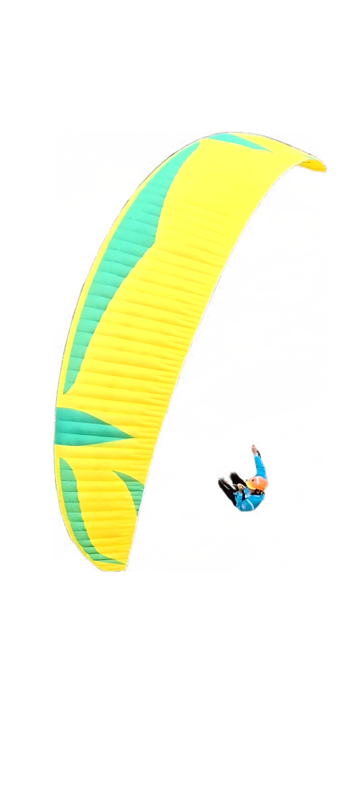

Proposta de conceito · Happy Soaring
Um céu,
não um site.
Em vez do típico slideshow + secções, uma cena única onde fazer scroll é ganhar altitude: o céu transiciona, os pilotos flutuam e cada um é navegável.
Em vez do típico slideshow + secções, uma cena única onde fazer scroll é ganhar altitude: o céu transiciona, os pilotos flutuam e cada um é navegável.
Cada piloto tem uma cor. Nós ajudamos-te a encontrá-la — e a voá-la.


Da soft-acro ao freestyle. Vê a Mullet 2 de um ângulo que poucos vêem — de cima.
Gente que descola junta, arruma a asa ao fim do dia e volta amanhã. Essa é a Happy Soaring.


Representantes oficiais em Portugal. Aconselhamento a sério, primeira inspeção incluída, cor à tua escolha.
Fala connosco →O gradiente do fundo desliza com o scroll: azul de alta altitude no topo → pôr-do-sol laranja no fim. Fazer scroll "é" subir.
Cada recorte oscila devagar, como se pairasse mesmo no ar. Pequeno detalhe que dá vida à cena.
Elementos movem-se a velocidades diferentes ao fazer scroll — profundidade real de céu, sem ser 3D.
Passar o rato num piloto revela um cartão (nome, vela, ligação). Não há menu clássico: exploras a cena.